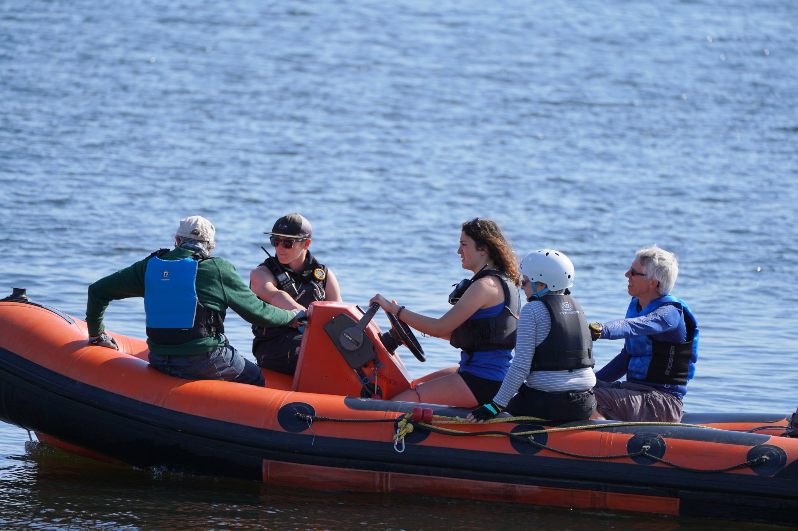
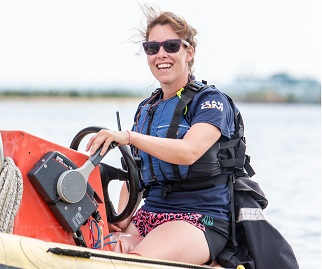
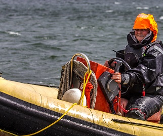

RYA Powerboat Courses
The RYA Powerboat Level 2 course is the UK’s most popular and widely recognised powerboat qualification, ideal for beginners and aspiring powerboat drivers. This practical, hands-on course teaches you how to safely and confidently handle a powerboat, making it perfect for leisure boaters, watersports enthusiasts, anglers, and those working on the water.
Over two action-packed days, you’ll learn essential skills including boat handling at speed, close-quarters manoeuvring, man overboard recovery, collision avoidance, basic navigation, and emergency procedures. Led by fully qualified RYA instructors, the course is taught in small groups to ensure maximum time on the water and personalised coaching.
Successful candidates receive the RYA Powerboat Level 2 Certificate, which is often required for powerboat hire in the UK and abroad and can be used to apply for an International Certificate of Competence (ICC). No prior experience is needed, making this course the perfect starting point for anyone new to powerboating.
Whether you’re looking to improve your boating confidence, hire powerboats on holiday, or take your first step toward professional maritime training, the RYA Powerboat Level 2 course gives you the skills, knowledge, and certification to get out on the water safely.

The RYA Safety Boat course is designed for experienced powerboat drivers who want to operate safety and rescue boats for sailing clubs, watersports centres, and organised events. This course focuses on the specialist skills needed to support dinghy sailing, racing, and paddlesport activities in a safe and effective manner.
On successful completion of this two day course, candidates receive the RYA Safety Boat Certificate, a respected qualification recognised by sailing clubs and watersports organisations throughout the UK and internationally.
Booking Discounts:
- Group Booking of 3 or more - SAVE 10%
- Members Automatic Maximum Saving - SAVE 25% (Maximum saving 25%)
BESPOKE BOOKING - If you can not find dates that work for you... please call us and will do everything to make it happen!
For more information give us a call on 01784 248881.
Our Courses

RYA Powerboat Level 2
The course, led by an RYA Powerboat Instructor, will be taught on a maximum Instructor: Student ratio of 1:3, giving you plenty of time at the helm to practice and improve your powerboat driving skills and techniques.
Age: 16+
Prior experience needed: None!
More Information Book Now
RYA Safety Boat
The course, led by an RYA Safety Boat Instructor, introduces a range of safety and rescue techniques to support and rescue dinghies, windsurfers and other water users.
Age: 16+
Prior experience needed: RYA Powerboat Level 2 + 1/2 seasons experience
More Information Book Now